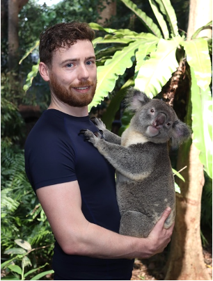

Thursday 16th & Friday 17th March
The trip started with the long haul out — a flight via Dubai, and the best part of two days lost to travelling before touching down on the other side of the world.
Saturday 18th March
The time difference meant landing in Brisbane at around 7am on the Saturday morning, bags dropped at a nearby hotel's luggage service for a couple of pounds, and a call to Laura not long after — around 10 or 11pm her time — mostly spent describing the Australian White Ibis, a genuinely striking bird with an absurdly long beak.
A big wander around the city led straight into the Botanical Gardens, which ended up swallowing a lot of the day: Eastern Water Dragons basking along the paths and pond edges, houseplants growing wild that back home only ever sit in a pot on a windowsill, green and red parakeets overhead, and fruit bats — properly big ones — hanging upside down in the trees by the entrance. A lunch stop at O'Bagel got carried back into the gardens to eat.
Still too early to check into the Airbnb, a nearby craft beer bar — Soapbox Beer — filled the gap with a few drinks, and by the end of it the day's walking had added up to roughly 17km, all on essentially zero sleep. Bags collected, into the accommodation, and then the deliberate fight against jet lag: staying up properly rather than caving into an early night, with a stop at the local Woolworths for a few bits, though somehow not for anything resembling dinner.
Sunday 19th March

An Uber out to the Lone Pine Koala Sanctuary for around 9:30am kicked off one of the best days of the trip. A dingo, a run of animals on the info monitors, then a parakeet feeding session where the birds came in properly close — landing on people's heads, on shoulders, wherever they fancied — followed by a crocodile and a first pass through the koalas. Then out to the open area for the kangaroos and wallabies, where a couple got fed and one even got a proper pet. More wandering turned up Kookaburras and yet more lizards, before heading back for the main event: holding a koala named Pretzel, getting a stroke in, and holding on for a genuinely decent stretch of time.

Then came the questionable decision to run the whole way back — via a Korean chicken place — a hard 14km with plenty of walking breaks built in, one diversion through a shopping centre purely for a toilet and a drink, and a stretch through the university campus along the way. Barely anything had been eaten all day beyond a few chips, and arriving slightly too early for the chicken place meant killing time before finally sitting down — ordering two cokes out of sheer heat and thirst, only for one to arrive at a time (the second kept deliberately cold, which meant a wait for it anyway).
An Uber back to the apartment was followed by a proper crash, salvaged only by a drag to the Woolworths for Gatorade. Dinner ended up being Uber Eats from Hashtag Burgers and Waffles — spotted on Instagram, too tempting to actually walk to — and came back fine, if unspectacular.
Monday 20th March
Something of a nothing day by comparison. A run down to the Botanical Gardens and up to O'Bagel for breakfast, eaten back in the gardens, plus a bonus 2km added on for good measure. The plan for the rest of the day was to do nothing at all — chill at the apartment, get some sun — which fell apart almost immediately. The original two-bed apartment booked with Emilie had come with rooftop pool access; the replacement, despite every indication of being in the same building, didn't. The pool that was available never saw any actual sun, which killed the plan stone dead.
A properly low mood set in with nothing to do — enough to prompt a 4.5km walk back to the same Korean chicken place from the day before for an actual proper meal this time (not much had been ordered the day before, appetite having been elsewhere). Getting outside and moving fixed the mood, as it tends to. An Uber brought the day to a close.
Tuesday 21st March
The train out to the airport to meet Graham came with a mildly stressful half hour after realising the wrong terminal had been reached entirely — international instead of domestic. Nuno turned up out of nowhere in the middle of it. A long wait for a taxi eventually got everyone to the hotel, followed by food and an early bed.
Wednesday 22nd March
An early start for a run, while Jenny went for a swim. Graham and Yousuke had sworn they wouldn't bother with breakfast — a promise broken almost immediately — so after the taxi to the dock, Jenny and Kieran grabbed breakfast too, ignoring everyone's warnings about tempting seasickness on a full stomach. Turned out fine.
Felix showed up while checking in for the boat, and the three ended up spending the whole two-hour trip together up on the open top deck — sun, wind, and, by the end of it, properly sunburnt, both of them.
Thursday 23rd – Tuesday 28th March
The rest of the trip — still to be written up.